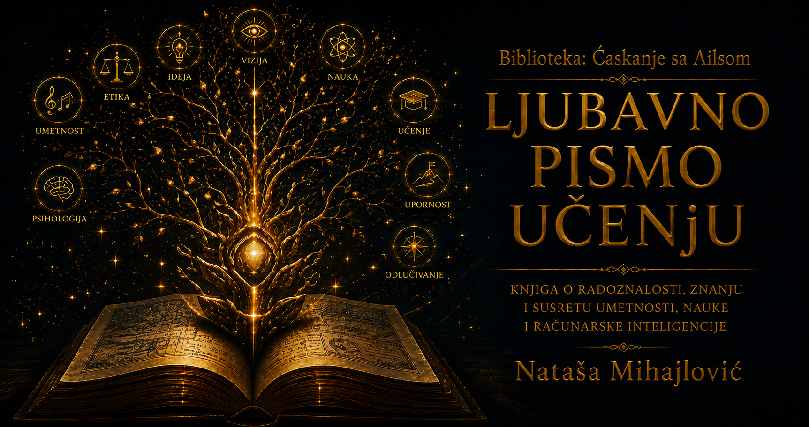

Ljubavno pismo učenju

Obrazovanje se često procenjuje prema tome koliko su učenici naučili, a ređe prema tome koliko je sam sistem sposoban da uči iz njihovog iskustva. Škola koja ponavlja isti postupak bez obzira na rezultate liči na kormilo koje ne prima podatke o pravcu broda. Povratna sprega traži da se plan, nastava, provera znanja i podrška povežu u krug: rezultat učenika postaje informacija za nastavnika, program i ustanovu, a ne samo ocena deteta.
Gedel nas podseća da nijedan dovoljno bogat formalni okvir ne može iznutra zatvoriti sva pitanja o sebi. U obrazovanju to znači da pravilnik, test i nastavni plan ne mogu sami dokazati da mere sve što je vredno. Učenik može razumeti duboko, a slabo se snaći u jednom obliku provere; može dobiti visoku ocenu ponavljanjem bez sposobnosti primene. Zato sistemu trebaju spoljašnji pogledi, različiti pokazatelji i prostor u kojem učenici i nastavnici mogu opisati ono što broj ne vidi.
Tomas Kun pokazuje da nauka napreduje i kroz promene paradigme, kada stari okvir više ne može uverljivo da objasni nagomilane anomalije. Obrazovna reforma ne bi smela svaku poteškoću proglasiti dokazom da treba srušiti ceo sistem, ali ni svako odstupanje tumačiti kao krivicu učenika ili nastavnika. Potrebno je razlikovati problem u primeni od znaka da su se svet, znanje i način rada toliko promenili da okvir zahteva preuređenje.
Rasel i Norvig opisuju različite pristupe učenju i inteligentnom delovanju: pretragu prostora mogućnosti, zaključivanje, planiranje, učenje iz podataka i delovanje pod neizvesnošću. Njihova širina podseća da ni ljudsko učenje nema samo jedan put. Nekome pomaže primer, drugome razgovor, trećem vizuelna predstava, praktična proba ili tiho samostalno istraživanje. Različite metode ne znače snižavanje kriterijuma; one otvaraju više puteva prema razumevanju koje se zatim proverava jasnim ciljem.
Tjuringova radoznalost učila je da se veliko pitanje može učiniti proverljivim ako pažljivo oblikujemo postupak, fon Nojmanova arhitektura pokazuje koliko raspored delova utiče na rad celine, a Zadeh upozorava da realni svet često ne staje u dve stroge kategorije. Arhitektura škole zato jeste arhitektura obuke: raspored vremena, veličina grupe, dostupnost povratne informacije i pravo na popravku oblikuju šta učenik uopšte može da nauči.
Sistem koji ume da uči čuva autoritet nastavnika, ali ga ne pretvara u nedodirljivost. On štiti učenika, ali ga ne oslobađa rada i posledica. Prikuplja podatke bez svođenja deteta na tabelu, uvodi promene u dovoljno malom obimu da se mogu proceniti i razlikuje prolaznu modu od stvarnog poboljšanja. Najvažnije, grešku ne skriva da bi sačuvao ugled, već je koristi da popravi postupak.
Obrazovanje priprema budućnost uvek sa zakašnjenjem: decu danas učimo za svet čije poslove, krize i alate ne možemo potpuno predvideti. Zato škola ne sme nuditi samo skup gotovih odgovora. Ona treba da razvije sposobnost postavljanja pitanja, proveravanja izvora, saradnje, menjanja strategije i istrajavanja pred složenim problemom. Obrazovni sistem koji i sam tako postupa uverljivije od svake parole pokazuje učeniku šta znači učiti celog života.